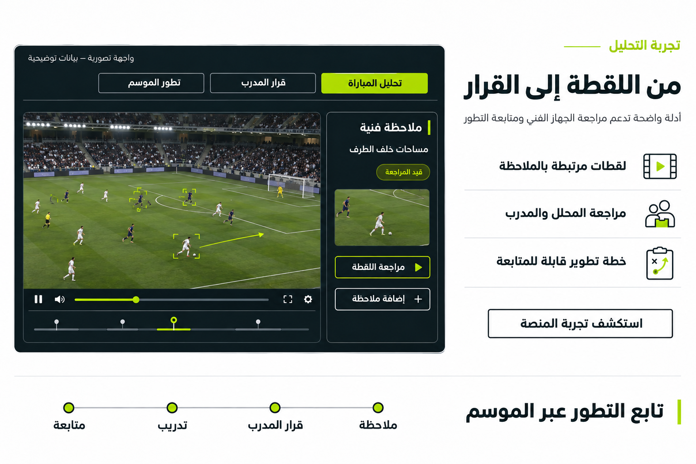

رؤية أعمق للمباراة
وقرارات أوضح للأداء
من تحليل المباراة إلى متابعة تطور اللاعب والفريق عبر الموسم.
تصور المنتج — قيد التطوير والتحقق الميداني
اربط ما حدث في الملعب بما يحتاج إلى التطوير
SPORTIX STADIUM VISION منتج ذكاء رياضي قيد التطوير داخل SPORTIX ECOSYSTEM، يهدف إلى تحويل فيديو المباريات والتدريبات المصرح به إلى تحليل قابل للمراجعة، وملاحظات مرتبطة بلقطات واضحة، وسجل يتابع تطور اللاعب والفريق عبر الموسم.
أدلة أوضح
ملاحظات مرتبطة بلقطات محددة تسهّل المراجعة الفنية.
أولويات فنية محددة
تركيز على ما يحتاج تطويرًا بناءً على ما حدث في الملعب.
متابعة مستمرة
سجل يتابع الأنماط والتدخلات عبر الموسم.
رؤية تناسب مسؤولية كل جهة
الأندية
دعم العمل اليومي للجهاز الفني، مراجعة اللقطات، مقارنة الخطة بالتنفيذ، متابعة التدخلات التدريبية وتطور الفريق.
الاتحادات الرياضية
متابعة البرامج والفرق والمنتخبات المشمولة بالتفويض، وتوحيد المؤشرات ومراجعة المسارات الفنية ضمن حدود الصلاحيات.
وزارة الرياضة
مؤشرات مؤسسية مجمعة ومصرح بها تساعد في متابعة البرامج وجودة التغطية واتجاهات التطوير ودعم التخطيط.
عنوان وزارة الرياضة يعرّف الفئة المستهدفة. لا يُعرض بوصفه شراكة أو اعتمادًا أو عميلًا قائمًا. لا يُوحى بوصول تلقائي إلى البيانات الفردية للاعبين أو تكتيكات الأندية.
افهم أداء اللاعب والفريق ضمن سياق المباراة
القدرات مستهدفة وتخضع للتحقق ضمن نطاق الاستخدام.
حركة اللاعبين والكرة
متابعة الحركة والتمركز وفق جودة المصدر.
الأداء الفني
مراجعة التمرير والاستلام والمراوغة والتسديد.
الأداء التكتيكي
فهم الضغط والمساحات والتحولات والتنظيم الجماعي.
الكرات الثابتة
مراجعة الروتينات والأنماط الهجومية والدفاعية.
تحضير المنافس
تنظيم الأدلة المتاحة لدعم الاستعداد للمباراة.
تطور الموسم
متابعة المؤشرات والمشكلات المتكررة عبر الوقت.
من اللقطة إلى القرار
أدلة واضحة تدعم مراجعة الجهاز الفني ومتابعة التطور.

مساحات خلف الطرف أثناء التحول الدفاعي
مثال توضيحي لملاحظة فنية مرتبطة بلقطة. يراجعها المحلل والمدرب ضمن سياق المباراة.
ملاحظات مرتبطة بلقطات محددة من المباراة لدعم مراجعة الجهاز الفني.
تابع المشكلة والتدخل وما تغيّر بعده
تربط التجربة المستهدفة الأنماط المتكررة بمراجعات الجهاز الفني والخطط التدريبية، ثم تقارن المؤشرات في فترات لاحقة مع مراعاة اختلاف الخصوم والتشكيلات وظروف المباراة.
ملاحظة
رصد نمط أو مساحة متكررة.
قرار المدرب
تحديد تدخل أو أولوية فنية.
تدريب
تنفيذ الخطة في التدريبات.
متابعة
مقارنة المؤشرات لاحقًا.
أي رسوم أو قيم مثال توضيحية فقط. لا يُنسب التحسن إلى تدخل واحد بوصفه سببًا مثبتًا.
تجربة تحليل متصلة برحلة التطوير الرياضي
STADIUM VISION
تحليل المباراة والأدلة ومؤشرات الموسم.
واجهة النادي
مراجعات الجهاز الفني والخطط والقرارات.
SPORT ID
سجل الرياضي وتطوره والأدلة المسموح بإضافتها.
واجهة الاتحاد
البرامج والفرق ضمن نطاق التفويض.
واجهة الوزارة
مؤشرات مؤسسية مجمعة ومصرح بها.
يُقدَّم الذكاء الرياضي والأمن والحوكمة بوصفها قدرات داخل SPORTIX ECOSYSTEM. يركز هذا البورتفوليو على المنتج والجهات الثلاث المحددة.
نطاق واضح وتجربة قابلة للتقييم
نموذج خدمة باشتراك سنوي يُحدد نطاقه بحسب الجهة والفرق والمصادر والقدرات المتفق عليها، مع تهيئة مناسبة للتصوير والمراجعة والدعم.
تحديد النطاق
الجهة، الفرق، المصادر، والقدرات المستهدفة.
تهيئة المصادر المصرح بها
فيديو المباريات والتدريبات بحقوق استخدام مناسبة.
تجربة ومراجعة
استخدام المنصة ومراجعة المخرجات مع الجهاز الفني.
تقييم القيمة والتوسع
تقييم الفائدة وتحديد مسار التوسع إن وُجد.
لا تُعرض أسعار أو عدد كاميرات ثابت أو مواعيد تشغيل مضمونة. الصورة تصور بصري للمنتج ولا تعني تركيبًا فعليًا في استاد.